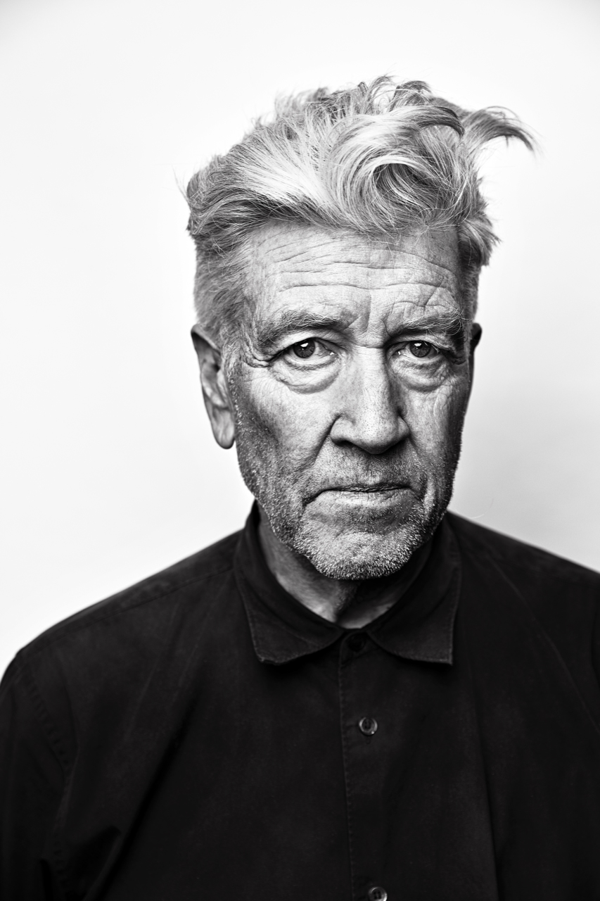
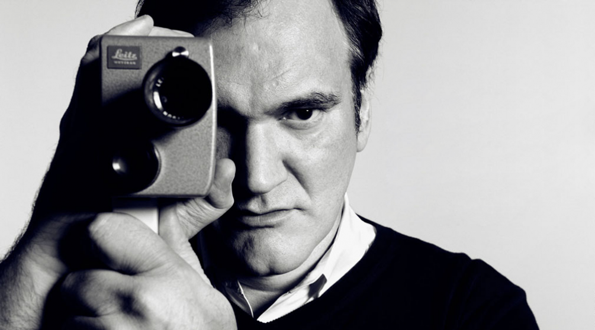

Directors
Like a stage director, a movie director tells the actors how to play a
particular scene, sets the scene for a specific type of mood, and
moves the actors around for a particular effect. In the above
definition, the word setting is referring to the specific atmosphere
created by the props, location, scenery, and costumes.
The directing of
cinematography includes both the camera shots and the lighting
to obtain both a particular type of effect and mood. The director also
has control over the editing to create the pace, rhythm, coherence,
story, and character development they and the producer want.
6 Duties and Responsibilities of a Cinematographer
-
Chooses a visual style for the film. A cinematographer
determines the visual style and approach of the film. For example, a
cinematographer on a documentary film determines whether to use
re-enactments, or to rely heavily on photographs and found footage.
-
Establishes the camera setup for every shot. A
cinematographer decides which types of cameras, camera lenses,
camera angles, and camera techniques best bring the scene to life.
Additionally, a cinematographer works with the script supervisor
and, if necessary, the locations manager to scope out each scene and
design what the most effective vantage points for the camera will
be. This helps preserve the intention and scale of the film.
-
Determines the lighting for every scene. A cinematographer
uses lighting to create the right visual mood the director aspires
to achieve. They must know how to enhance an image’s depth,
contrast, and contour to support the story’s atmosphere.
-
Explores the potential of every location. A good
cinematographer understands what visuals excite the director and can
make recommendations about what shots to capture.
-
Attends rehearsals. A cinematographer attends rehearsals with
the actors since the blocking for a scene will likely change and
evolve. During rehearsals, cinematographers adjust the camera in
response to a particular gesture or action, and as actors adjust
their body positions and blocking, to better fit the framing of the
shot.
-
Elevates the vision of the director. A good cinematographer
will introduce ideas and concepts the director may not have
considered.

